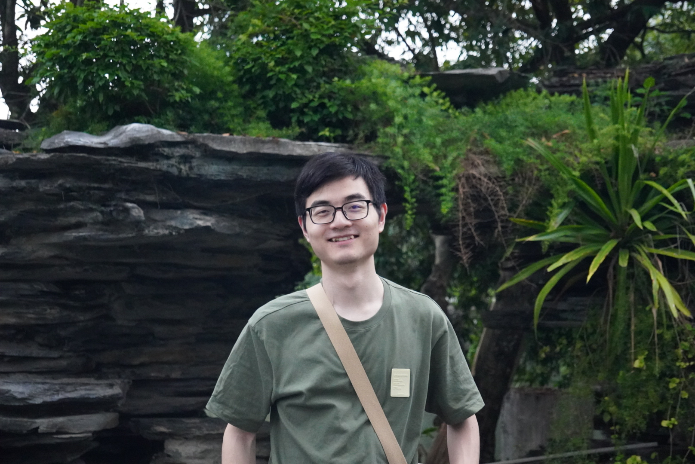

|  |
[Email] [Github] [Google Scholar] [Semantic Scholar] |
I am a first-year Ph.D. student at the Department of Computer Science in the University of Hong Kong (HKU), supervised by Dr. Lingpeng Kong and Dr. Tao Yu in HKUNLP.
I received my Master degree in Fudan University, supervised by Prof. Qi Zhang in FudanNLP Group,
and my Bachelor degree in Sun Yat-sen University.
I am broadly interested in different topics in NLP. Currently, I focus more on interacting and exploiting large language models (LLMs):
Better interacting with LLMs via In-context Learning (SAIL, CEIL, OpenICL)
From general LLMs to task/domain specific efficient models by Data Distillation (ZeroGen, ProGen, SunGen).
(*: equal contribution)
Preprints
OpenICL: An Open-Source Framework for In-context Learning
Zhenyu Wu*, YaoXiang Wang*, Jiacheng Ye*, Jiangtao Feng, Jingjing Xu, Yu Qiao, Zhiyong Wu.
[pdf] [code]
Self-adaptive In-context Learning
Zhiyong Wu*, Yaoxiang Wang*, Jiacheng Ye*, Lingpeng Kong.
[pdf] [code]
2023
Compositional Exemplars for In-context Learning
Jiacheng Ye, Zhiyong Wu, Jiangtao Feng, Tao Yu, Lingpeng Kong.
ICML 2023. [pdf] [code]
Self-Guided Noise-Free Data Generation for Efficient Zero-Shot Learning
Jiahui Gao*, Renjie Pi*, Yong Lin, Hang Xu, Jiacheng Ye, Zhiyong Wu, Xiaodan Liang, Zhenguo Li, Lingpeng Kong.
ICLR 2023, spotlight. [pdf] [code]
2022
ProGen: Progressive Zero-shot Dataset Generation via In-context Feedback
Jiacheng Ye, Jiahui Gao, Zhiyong Wu, Jiangtao Feng, Tao Yu, and Lingpeng Kong.
EMNLP-Findings 2022, long paper. [pdf] [code]
ZeroGen: Efficient Zero-shot Learning via Dataset Generation
Jiacheng Ye*, Jiahui Gao*, Qintong Li, Hang Xu, Jiangtao Feng, Zhiyong Wu, Tao Yu and Lingpeng Kong.
EMNLP 2022, long paper. [pdf]. [code]
2021
Heterogeneous Graph Neural Networks for Keyphrase Generation
Jiacheng Ye*, Ruijian Cai*, Tao Gui and Qi Zhang.
EMNLP 2021, long paper. [pdf] [code]
Keyphrase Generation with Fine-Grained Evaluation-Guided Reinforcement Learning
Yichao Luo*, Yige Xu*, Jiacheng Ye, Xipeng Qiu and Qi Zhang.
EMNLP-Findings 2021, long paper. [pdf] [code]
TextFlint: Unified Multilingual Robustness Evaluation Toolkit for Natural Language Processing
ACL 2021, [pdf] [platform] [code] [blog (zh)]
One2Set: Generating Diverse Keyphrases as a Set
Jiacheng Ye, Tao Gui, Yichao Luo, Yige Xu, and Qi Zhang.
ACL 2021, long paper. [pdf] [code] [blog (zh)]
2020
Leveraging Document-Level Label Consistency for Named Entity Recognition
Tao Gui*, Jiacheng Ye*, Qi Zhang, Yaqian Zhou, Yeyun Gong, Xuanjing Huang.
IJCAI 2020. [pdf] [code]
Uncertainty-Aware Label Refinement for Sequence Labeling
Tao Gui*, Jiacheng Ye*, Qi Zhang, Zhengyan Li, Zichu Fei, Yeyun Gong and Xuanjing Huang.
EMNLP 2020, long paper. [pdf] [code]
Constructing Multiple Tasks for Augmentation: Improving Neural Image Classification with K-means Features
Tao Gui*, Lizhi Qing*, Qi Zhang, Jiacheng Ye, Hang Yan, Zichu Fei and Xuanjing Huang.
AAAI 2020. [pdf] [code]
Nov. 2021 - Present
Research Intern, Shanghai AI Lab.
Mentor: Lingpeng Kong.
Research about Pre-trained Language Model and Text Generation.
Jun. 2021 - Nov. 2021
Research Intern, Tencent.
Mentor: Zhihui Lao and Lifeng Wang.
Research about a better pre-ranking paradigm for Advertising System and Recommendation System.
Aug. 2018 - Dec. 2018
Engineer Intern, Netease.
Worked on data engineering.
Outstanding graduate of Shanghai, Shanghai, 2022.
National Scholarship (1%), Ministry of Education of China, 2021.
Glarun Scholarship of CETC-NRIET (5%), Fudan University, 2020.
The second-grade scholarship (10%), Sun Yat-sen University, 2016/2017/2018.
The faculty scholarship (10%), Sun Yat-sen University, 2016/2017.